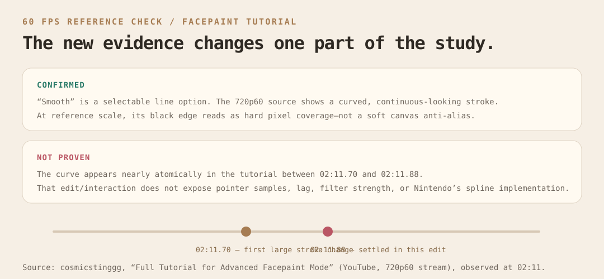

Facepaint exposes Smooth as a line option. Its curve appears continuous but its black edge reads as hard, pixel-stepped coverage.
SIMEIOMA / SKETCH RESEARCH / 2026-07-24
Tomodachi-inspired smooth ink, without the mush.
A 720p60 Facepaint reference refined the finding: smooth geometry does not imply a soft raster edge. The game reference reads as hard pixel coverage—not blur.
Keep adaptive filtering and fixed-distance resampling as a Simeioma feel candidate. Treat hard Tomodachi-like coverage and softened canvas coverage as separate, explicit rendering modes.
New 60fps reference: one finding confirmed, one overturned.

The Simeioma study remains useful—but is no longer presented as a raster match.
What the evidence actually supports
Pointer samples can arrive coalesced. Input stability, path geometry, dab spacing, and raster coverage must be designed separately.
The source cut does not show the live stroke growing continuously. It cannot prove a 1€ filter, a spline family, or exact stroke spacing.
Recommended stroke pipeline
raw samples → persistence truth
coalesced input → speed-adaptive 1€ filter → 2–3px logical resampling
display geometry → round caps / joins → normal canvas alpha coverage
coalesced input → speed-adaptive 1€ filter → 2–3px logical resampling
display geometry → round caps / joins → normal canvas alpha coverage
Scope for the implementation pass
Introduce deterministic filter/resampler helpers. Store raw data, replay the derived path, and protect line/circle/rectangle detection from filtering.
Consume getCoalescedEvents() when available, batch display to requestAnimationFrame, and give the canvas an explicit device-pixel-ratio policy.
Persist legacy, simeioma-adaptive, and tomodachi-pixel. New gestures remain freehand; defer auto-shape conversion until it has explicit confirmation.
Use the inspected 60fps video for hard-coverage styling only. Find or capture a continuous high-frame-rate gesture before tuning filter strength, spacing, and latency.
Read the full research record, 60fps source analysis, parameter rationale, non-goals, and regeneration commands in tomodachi-life-smooth-mode.md. The research materials make no claim that Nintendo uses the shown filter; that requires a continuous measured reference gesture or source evidence.